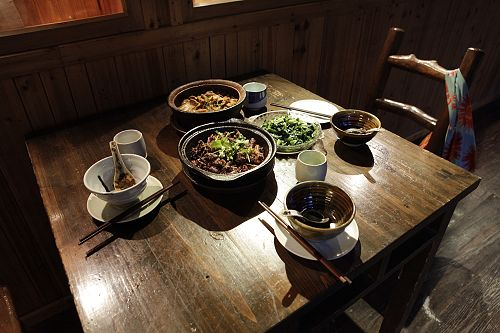
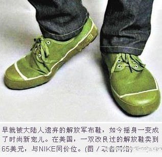

简易插花 @ May 25, 2011
这两天我家的鲜花，搭配韩国人设计的花器，真美。
对于琐碎的可有可无的生活内容，诸如喝茶、收集美的器物，逛花卉市场，照顾花草，学做旅行中品尝到的美食......对于这些事物还有一些欲望，也是值得庆幸的事儿。


这两天我家的鲜花，搭配韩国人设计的花器，真美。
对于琐碎的可有可无的生活内容，诸如喝茶、收集美的器物，逛花卉市场，照顾花草，学做旅行中品尝到的美食......对于这些事物还有一些欲望，也是值得庆幸的事儿。
在“三宝国际陶艺村”的晚饭，每样菜基本都是厨师花了时间和精力做的。红烧鸭子、腐竹+豆皮+鲜笋、一份当地的土青菜。样样可口。

腐竹+豆皮+鲜笋。用了红烧五花肉的汤料。

景德镇瑶里的苦株豆腐，是山里苦株树上结的果子，摘下来磨成粉制成的。临走前，我们每个人都买了几袋，味道确实不一样。

在景德镇几日，对那里的菜肴印象深刻。回到家立刻就做上了。在菜场里幸运地买到了长条状的鲜笋，剥去一层笋衣，用刀轻轻地削一层，里面的笋肉异常鲜嫩。用它与红烧五花肉炖了油面筋、白豆干，五花肉成了配角。

虽然脸上挂满疲劳，且需要几天时间休息才能驱散的疲劳感，我想我还是要去阳羡的。两点一线的生活太久了，需要一些变化，短暂的一次旅行，或是别的什么，并不能确定。
“我自饮我阳羡茶,且行且看白日斜。” 在回南京的路上，和问问、SHUWUA望着夕阳，迷人的夕阳，回忆当日结识的朋友，体会他们在寂寞中享受生活，逍遥自在。抛下世俗的繁文缛节，“抛下”这种能力不是人人兼有，不是人人欣赏，却令我倾慕已久...
在追寻各种心仪器物这一过程中，其实追寻的是一种生活态度。


猜猜，这是什么？

每次都会开到绿博园，错过滨江公园，然后一直往前开，快把整条扬子江大道全程走完，再掉头回去。每次都这样，其实滨江公园不到绿博园。这次记住了。
第一次参加这种地方举办的所谓国际音乐节，但是四支国外乐队均不让上场，包括有外国人的乐队。以及，乐队上场前，所有歌词均需通过公安审查。不知道《宠物同谋》乐队怎么上场的，原先的HELEN主唱换成了意大利人玛丽，有首歌的歌词里有句意大利语，公安问这是什么意思，答：“有关fashion show的内容”。演出结束后，和朋友们回酒店，另一支乐队临上场前被拦下，没能演出。挺郁闷的，除了歌词要审查，包括舞台上播放的视频也要审查，审察时开场片段晃动，公安说字儿看不清楚，所以泡汤了。这是进步还是倒退呢？这种审查制度下的演出，都说未尽兴，晚上四支国外乐队在五台山体育馆北大门的一间酒吧上演，希望他们能尽兴而归。
左边挂着胸牌的工作人员，第一次见着把海魂衫穿得如此美好的女孩。右边三个是日本人，也挂着胸牌，不知道是不是被cancel的乐队？

场地里的小朋友很多，这位小朋友被父亲抗在肩膀上看演出，一会儿又跟着父亲一起大跳摇摆舞，若无其事又投入的表情很可爱。


消魂的背影。

观众当中的外国人三五成群，带着啤酒饮料，有的将红领巾系在脑门上，将一道杠二道杠三道杠别在胸前。玩得很high~

虎子与他所在乐队《宠物同谋》的歌曲被删减成四首，不过观众反映还是挺热烈的。这是我第一次现场看《宠物同谋》乐队演出，的确不同与国内乐队的风格。南京本土乐队主唱李志，末了演唱了一首《好大一棵树》，向这支乐队致敬。

如果不是他来，我是不会去这类音乐节凑热闹的。平时联系少，每每相见还是会有亲人的感觉，这份情谊难能可贵。

傍晚时分，一个年轻女孩儿和一个国外帅哥坐在我们前面的草坪上，那个穿着修身衬衫的外国男孩既帅教养也好，赏心悦目。

这位观众始终没坐下来休息过，一直站着看演唱会。敢情是为了显露他体恤上的那些小字儿？

夜幕降临了，公安越来越多。


这会儿luke趴在地上呼呼大睡，我躺在沙发上，土豆的下巴搁在前爪上趴在我身边，睁着眼睛望着我，家里安静极了。这样的夜晚已经很少很少，不是匆忙洗澡睡觉，便是到家的时候很晚。因为陪伴它们的时间少，最近会刻意延长散步时间。今晚户外都是热风，走着走着出了一身细密的汗珠，luke的脚步显得比平时缓慢。很远处有人大声亮了一嗓子，忽然脑子里蹦出＂无产阶级的声音＂的反映。没有遇见别的狗，没有遇见别的人，越走心里越安静，仿佛走在一片空白里。
昨晚十点多钟眼睛就睁不开了，沉沉的一觉睡到九点才醒，对八点的闹铃毫无知觉，今天疲劳感依旧，工作时还好，晚上散步回来又困又懒。人的精力终究是有限的，不是吗。忙起来什么都来不及想来不及消化的状况，的确有些可怕。另一个可怕的状况是没有欲望与他人交流更深的话题，最好有事说事，没事各自走人。不得不指望休假来调节，休假是件很重要的事儿。


春季是最好的散步季节，可以闻到青草的味道。这一季，特别爱吃水果和各种蔬菜，野菜也正当时，只是清炒，各种自然的味道无比诱人。连我这个平时对蔬菜没太多爱的人，也爱上了。


如果在日本街头看到一位帅哥穿着土得掉渣的绿军鞋逛街，千万别诧异，这种早就被国人遗弃的解放军布鞋，摇身一变已成了时尚新宠儿。在美国，一双改良过的解放鞋甚至卖到了65美元，跟国际知名品牌NIKE同等价位。
自己用的时候没觉得好，人家一流行土包子们又患得患失。无论什么用品自己喜欢最重要，不是因为品牌，价格，以及别人如何看待才入手。你说这东西如何好，如何贵，人家表情茫然，不以为然。没有共鸣，何来爱呢。当然很多人即使没有共鸣，也会跟着人家屁股后面团团转，人以群分，物以类聚，有些崇尚的是他人眼光，有人追求的是自己的乐趣。多数人还是随大流，就这么回事，生怕流行里惟独少了一个自己。
记得去年几乎半成以上的文艺小青年都穿双回力鞋，那么多人一起穿，也就不特别了，再说了那小白鞋一出脚汗，鞋四周泛黄，而特容易臭脚，小时候都有体会。流行一旦身处中国，最终都会让人杀心四起，腻味到翻胃。今年会不会许多小青年一起穿老解放鞋呢？


爱，每件茶器上都留有不同的日常。